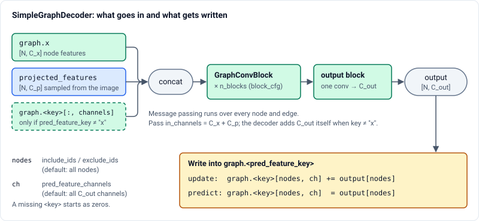
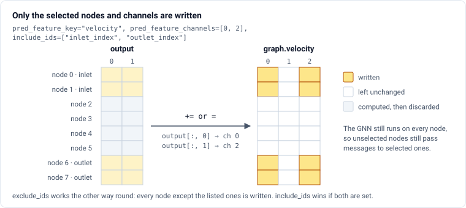
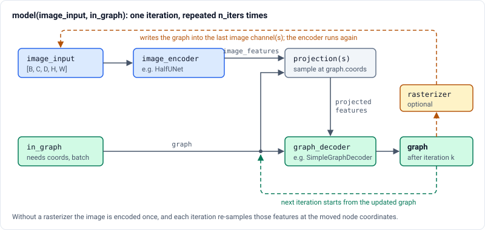

im2sim.models#
Classes#
A flexible HalfUNet [1] implementation for image segmentation and reconstruction tasks. |
|
A base class for the Im2Sim model that combines an image encoder, a graph decoder, and optional rasterization. |
|
A specific implementation of the Im2Sim model that uses a HalfUNet for image encoding and a SimpleGraphDecoder for graph decoding. |
|
A flexible implementation of a 'Reverse HalfUNet', which is inspired by a HalfUNet[1] architecture but where the HalfUNet does away with the decoders of a conventional UNet[2], this model instead removes the encoders. |
|
A graph decoder that takes a graph and projected image features and produces an updated graph. |
|
A flexible U-Net [1] implementation for image segmentation and reconstruction tasks. |
Functions#
Guide#
models contains complete networks built from the blocks in im2sim.layers and configured with
the classes in im2sim.configs. There are two families:
Image models:
UNet,HalfUNetandReverseHalfUNet. These map an image to an image and can also serve as image encoders.Image-to-graph models:
SimpleGraphDecoder,Im2SimBaseandIm2SimGen2. These combine an image with a graph, such as a template mesh, and predict new graph features or node positions.
Building an image model#
Every model takes its input and output channels and its spatial rank as arguments, and
everything else from its config. The same config can build a 2D or a 3D model:
from im2sim.configs import UNetConfig
from im2sim.models import UNet
cfg = UNetConfig(filters=[32, 64, 128]).single_class_segmentation_mode()
model = UNet(in_channels=1, out_channels=1, rank=3, cfg=cfg)
HalfUNet fuses its levels by addition instead of using a full decoder, which makes it a
light image encoder. Im2SimGen2 uses it for that role. ReverseHalfUNet keeps the
decoders and drops the encoders, and supports deep supervision.
The graph decoder#
SimpleGraphDecoder is the graph half of every image-to-graph model. It takes a graph,
optionally with image features already sampled at its nodes, runs a stack of
GraphConvBlock layers, and writes the result into one feature of the
graph.

from im2sim.configs import GraphConvBlockConfig, SimpleGraphDecoderConfig
from im2sim.models import SimpleGraphDecoder
cfg = SimpleGraphDecoderConfig(
n_blocks=2,
block_cfg=GraphConvBlockConfig(depth=2),
protocol="update",
pred_feature_key="coords",
)
# graph.x has 32 channels and the projected image features have 64.
decoder = SimpleGraphDecoder(
in_channels=32 + 64, out_channels=3, cfg=cfg, graph_channels=32
)
graph = decoder(graph, projected_features)
The configuration answers three questions.
- Which feature is written? (
pred_feature_key) The graph attribute to write. The default is
"x". Any other key, such as"coords"or"pressure", is created as zeros if it is missing. Its current value is also appended to the decoder input, so the decoder can see the state it is changing. The extraout_channelsinput channels are added automatically, soin_channelsis onlygraph.xplus the projected features. Since the decoder does not writegraph.x, a small MLP mapsgraph.xplus the projected features back tograph_channelschannels, sograph.xkeeps its width from one iteration to the next. Passgraph_channels(the width ofgraph.x) whenever projected features are used.With
"x", the output is written into the first channels ofgraph.xand the projected features are then dropped, so the written channels must lie within the originalgraph.x.- How is it written? (
protocol) "update"adds the output to the existing value (feature += output), so the decoder learns a correction or a displacement. This suits iterative refinement and mesh deformation."predict"overwrites the value (feature = output), so the decoder predicts the quantity directly, for example a pressure field on a fixed mesh.- Where is it written? (
pred_feature_channels,include_ids,exclude_ids) Restricts the write to some channels and some nodes.
include_idsandexclude_idsname graph attributes that hold node indices, such as theinlet_indexattributes created by im2sim.mesh_ops.

# Update only the x and z velocity of the inlet and outlet nodes.
cfg = SimpleGraphDecoderConfig(
protocol="update",
pred_feature_key="velocity",
pred_feature_channels=[0, 2],
include_ids=["inlet_index", "outlet_index"],
)
decoder = SimpleGraphDecoder(
in_channels=32 + 64, out_channels=2, cfg=cfg, graph_channels=32
)
out_channels must equal the number of channels written: len(pred_feature_channels), or the
width of the feature when no channels are selected. The selection limits only the write.
Message passing still runs over every node, so nodes that are not written still pass
information to the nodes that are.
Image-to-graph models#
Im2SimBase connects four components:
an image encoder,
image -> image_features;one or more projections,
(image_features, graph) -> [N, C]features per node;a graph decoder,
(graph, projected_features) -> graph;an optional rasterizer,
(graph, image) -> image, which writes the current graph back into the image.
Calling the model runs the loop below n_iters times and returns the final graph, or a list
with the graph after every iteration when return_intermediate_graphs=True.

Two details of the loop matter in practice:
The projection samples features at
graph.coords. A decoder withpred_feature_key="coords"and the"update"protocol moves the nodes, so each iteration samples the image at the new node positions.Without a rasterizer, the image is encoded once. With one, the rasterizer overwrites the last channel(s) of the image with the current graph and the encoder runs again on every iteration. Reserve a channel for it, for example
image_channels=2for one intensity channel plus one mask channel.
Im2SimGen2 is Im2SimBase with a HalfUNet encoder and a
SimpleGraphDecoder, built from their configs:
from im2sim.configs import (
GraphConvBlockConfig,
HalfUNetConfig,
SimpleGraphDecoderConfig,
)
from im2sim.layers import MaskRasterizer, TrilinearProjection
from im2sim.models import Im2SimGen2
model = Im2SimGen2(
image_shape=(128, 128, 128),
image_channels=2, # intensity + the mask written by the rasterizer
projection_channels=64, # encoder output channels sampled at each node
graph_channels=32, # channels of graph.x
out_channels=3, # channels written by the decoder
encoder_cfg=HalfUNetConfig(n_levels=3, hidden_channels=64),
decoder_cfg=SimpleGraphDecoderConfig(
block_cfg=GraphConvBlockConfig(depth=2),
pred_feature_key="coords",
),
projection=TrilinearProjection(image_dim=128),
rasterizer=MaskRasterizer(),
n_iters=3,
)
out_graph = model(image, graph)
The graph must have coords, and batch for the projection and rasterizer. Graphs batched
by the DataLoader in im2sim.data already have batch. For a single graph, set
graph.batch = torch.zeros(graph.num_nodes, dtype=torch.long).
image_input may be None when a rasterizer is given. The model then starts from an empty
image of shape image_shape and rasterizes the input graph into it.
Custom architectures#
Use Im2SimBase directly to swap in your own components:
from im2sim.models import HalfUNet, Im2SimBase, SimpleGraphDecoder
encoder = HalfUNet(
in_channels=2, out_channels=64, rank=3, cfg=HalfUNetConfig(n_levels=3)
)
decoder = SimpleGraphDecoder(
in_channels=32 + 64,
out_channels=3,
cfg=SimpleGraphDecoderConfig(pred_feature_key="coords"),
graph_channels=32, # channels of graph.x, restored after each iteration
)
model = Im2SimBase(
image_shape=(128, 128, 128),
image_encoder=encoder,
graph_decoder=decoder,
projections=TrilinearProjection(image_dim=128),
rasterizer=MaskRasterizer(),
n_iters=3,
)
Im2SimBase checks the argument names of each component’s forward when it is built, and
raises a ValueError if they differ:
Component |
Required |
|---|---|
graph decoder |
|
projection |
|
rasterizer |
|
To sample several encoder levels, pass a list of projections. The encoder must then return a list
of feature maps with one entry per projection, and the decoder receives a list of projected
features. SimpleGraphDecoder expects a single tensor, so this needs a custom decoder.
Saving and loading#
Models are ordinary torch.nn.Module objects. Save the weights with state_dict and the
architecture with the config’s save():
torch.save(model.state_dict(), "unet.pt")
cfg.save("unet.json")
cfg = UNetConfig.load("unet.json")
model = UNet(in_channels=1, out_channels=1, rank=3, cfg=cfg)
model.load_state_dict(torch.load("unet.pt"))
For Im2SimGen2, save encoder_cfg and decoder_cfg.block_cfg this way.
SimpleGraphDecoderConfig has no save() (see im2sim.configs), so store its remaining fields,
and the constructor arguments, alongside them.